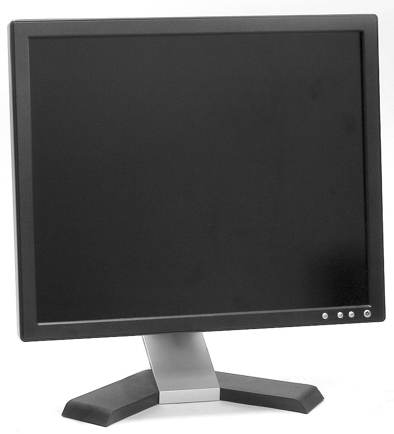

|  | A computer monitor is an output device that displays information in pictorial or text form. A monitor usually comprises a visual display, some circuitry, a casing, and a power supply. The display device in modern monitors is typically a thin-film-transistor liquid-crystal display (TFT-LCD) with LED backlighting having replaced cold-cathode fluorescent lamp (CCFL) backlighting. Previous monitors used a cathode-ray tube (CRT) and some plasma (also called gas-plasma) displays. Monitors are connected to the computer via VGA, Digital Visual Interface (DVI), HDMI, DisplayPort, USB-C, low-voltage differential signaling (LVDS) or other proprietary connectors and signals. |
Originally, computer monitors were used for data processing while television sets were used for entertainment. From the 1980s onwards, computers (and their monitors) have been used for both data processing and entertainment, while televisions have implemented some computer functionality. The common aspect ratio of televisions, and computer monitors, has changed from 4:3 to 16:10, to 16:9. Modern computer monitors are easily interchangeable with conventional television sets and vice versa. However, as many computer monitors do not include integrated speakers nor TV Tuners (such as digital television adapters), it may not be possible to use a computer monitor as a TV set without external components. |
|